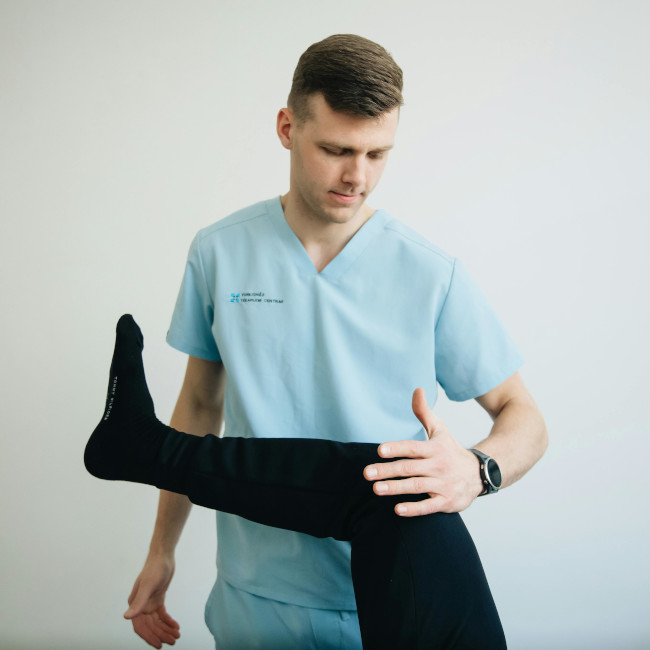
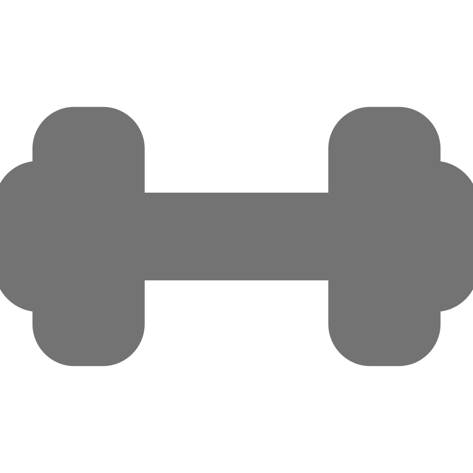
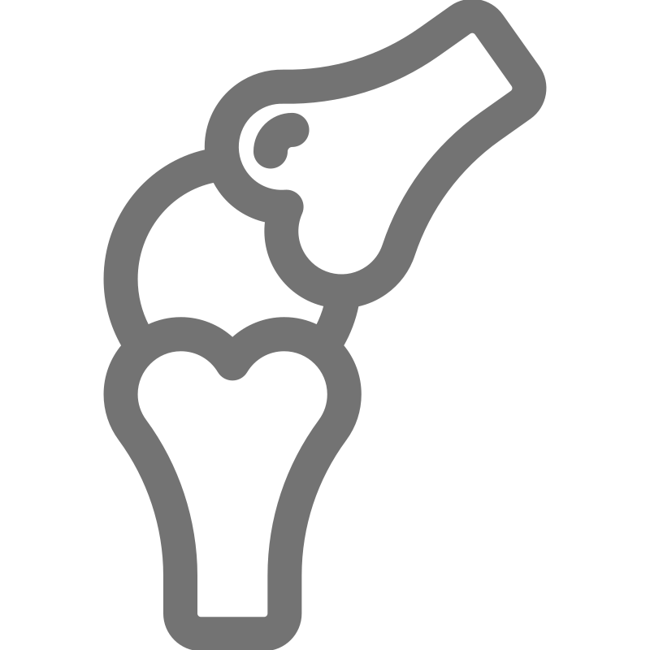

Dr. Dráuzio Simões
Sou Cirurgião Ortopedista em Fortaleza, com atuação especializada em Medicina Esportiva.
Trato das principais patologias do joelho, com tratamento clínico e intervenção cirúrgica aberta ou minimamente invasiva.

Sou Cirurgião Ortopedista em Fortaleza, com atuação especializada em Medicina Esportiva.
Trato das principais patologias do joelho, com tratamento clínico e intervenção cirúrgica aberta ou minimamente invasiva.

Diagnóstico e tratamento completo das principais lesões e dores no joelho

Tratamento de lesões esportivas com foco no retorno seguro às atividades

Nem todo caso precisa de cirurgia priorizo abordagens clínicas eficazes
Excelente atendimento! O Dr. Dráuzio foi muito atencioso e resolveu meu problema no joelho rapidamente. Recomendo!
Profissional incrível! Tratamento conservador eficaz para minha lesão esportiva. Voltei às atividades sem dor.
Muito bom! A equipe é prestativa e o diagnóstico foi preciso. Pequeno atraso na consulta, mas valeu a pena.
Dr. Dráuzio é especialista mesmo! Resolveu minha fascite plantar com terapia de ondas de choque. Obrigado!
Atendimento humanizado e profissional. Pós-operatório tranquilo e recuperação rápida. Super recomendo!
ENDEREÇO
Av. Exemplo 0000 - Bairro - Sala X1
CIDADE
Fortaleza - CE
CEP
00000-000